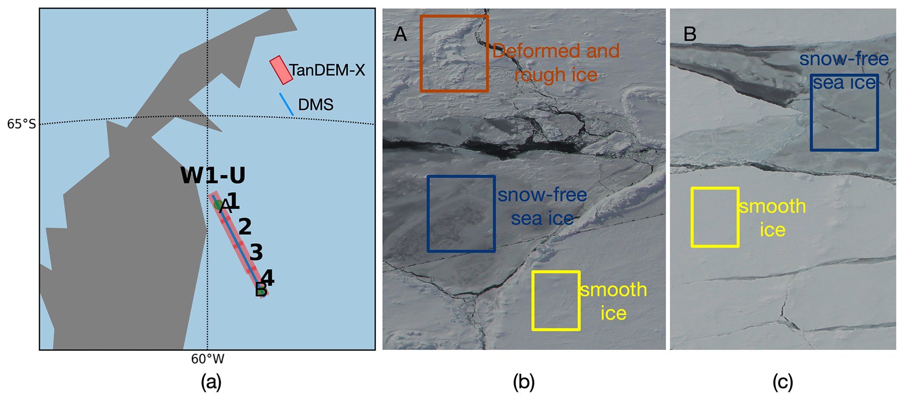
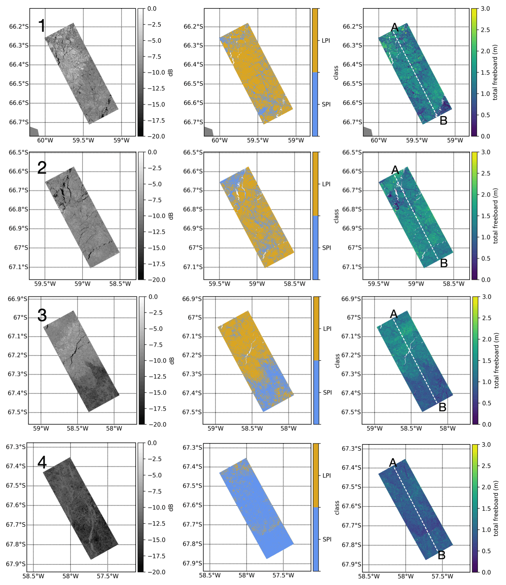

sea ice
Sea ice topography retrieval
This project uses satellite radar to measure the shape of sea ice: how high it sits above the ocean and how rough it is.

Why it matters
Measuring sea ice topography over large polar regions helps scientists track changes that are impossible to see from field measurements alone.
How we measure it
The work uses single-pass interferometric radar images (InSAR) taken from two slightly different viewing positions. This makes it possible to estimate elevation, similar to how two eyes give depth perception. A key challenge is that radar signals can travel into snow and ice before bouncing back, so the measured height can be biased. The project combines interferometry, radar polarization, and machine learning to correct this bias for different ice regimes.

What we learn
The results show where Antarctic sea ice is smoother or rougher, where the freeboard is higher, and how ice structure changes between the Weddell and Ross seas. This makes satellite radar more useful for monitoring sea ice topography and gives a clearer picture of polar change for climate and ocean research. Advanced SAR techniques, such as polarimetry and interferometry, provide essential information about sea ice topography.
The results also show why more advanced algorithms are needed to retrieve reliable sea ice information from SAR imagery, especially when radar signals interact with snow, rough ice, and different ice regimes.
